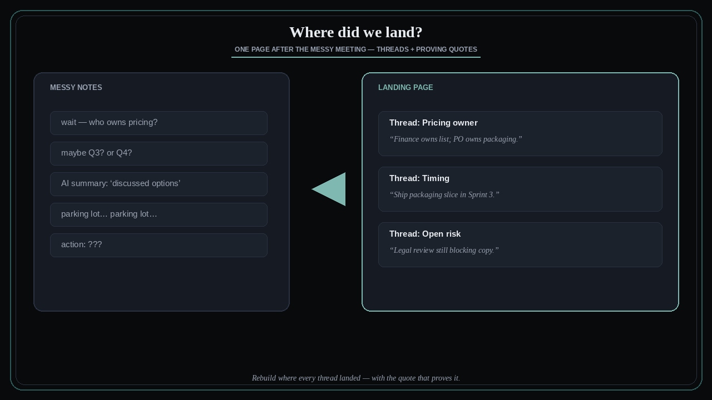

After messy meetings: where did every thread land?
Source: George / prodmgmt.world (@nurijanian)
original post
What it claims
After every messy meeting, rebuild the transcript into one page: where every thread landed, with the quote that proves it. Generic AI meeting notes often collapse into “discussed options”; the discipline is a landing map — thread → decision/open → proving quote — so alignment is checkable, not vibes.
Why it matters for a PO
POs leave steering and trio meetings with Slack threads that disagree about what was decided. If you cannot point to a proving quote, stakeholders will rewrite history next week. One landing page beats a long AI summary that never names the decision.
3 takeaways
- Landing map: each thread → where it landed → quote that proves it.
- Generic AI notes that say “discussed options” are not an alignment artifact.
- Treat the one-pager as the source of truth for follow-ups and backlog edits.
Practice this week
After your next messy sync, write a one-pager with three columns: thread, landing (decision / open / parked), proving quote. Share it within 24 hours and ask for corrections. Do not open new backlog items until disputed landings are resolved.